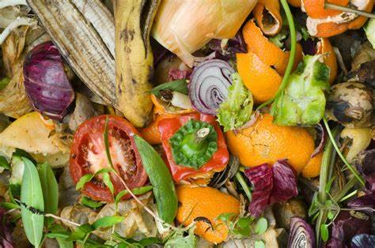

Apa Itu Bank Sampah?
Bank sampah adalah suatu inisiatif atau program yang bertujuan untuk mengumpulkan, mengelola, dan mengolah sampah secara efisien dan bertanggung jawab. Bank sampah ini berfokus pada pengumpulan sampah dari masyarakat, pemilahan sampah menjadi bahan yang dapat didaur ulang, dan menjual atau mendaur ulang bahan-bahan tersebut. Tujuannya adalah untuk mengurangi jumlah sampah yang berakhir di tempat pembuangan akhir (TPA) atau tempat sampah ilegal, serta untuk mempromosikan daur ulang dan pengelolaan sampah yang lebih berkelanjutan.
Proses Pengolahan Sampah
Pada sistem bank sampah ini, pengolahan dan implementasi yaitu, setiap rumah mengumpulkan sampah-sampah mereka. Sampah-sampah itu kemudian dipisahkan ke kategori sampah plastik, sampah logam, dan sampah organik. Sampah plastik dan sampah logam yang telah dikumpulkan akan akan di ambil oleh pengepul setempat. Sedangkan sampah organik akan diproses menjadi pupuk atau eco-enzyme.
Jenis Sampah dan Daur Ulang
Sampah Plastik
Sampah plastik adalah jenis sampah yang terbuat dari berbagai jenis plastik, seperti botol plastik, kantong plastik, wadah plastik, dan lain sebagainya.

Sampah Logam
Sampah logam termasuk bahan seperti kaleng aluminium, kaleng timah, potongan logam, dan lain sebagainya.

Sampah Organik
Sampah organik terdiri dari bahan-bahan yang mudah membusuk, seperti sisa makanan, daun, ranting, atau bahan-bahan organik lainnya.
Manfaat Daur Ulang
Daur ulang memiliki sejumlah manfaat yang signifikan, termasuk:
-
Pengurangan Sampah di Tempat Pembuangan Akhir (TPA):
- Pengelolaan Sampah Lebih Efisien: Dengan memisahkan sampah menjadi kategori plastik, logam, dan organik, jumlah sampah yang akhirnya masuk ke TPA menjadi lebih sedikit. Ini membantu mengurangi tekanan dan penggunaan lahan di TPA.
-
Daur Ulang Bahan Plastik dan Logam:
- Konservasi Sumber Daya: Daur ulang sampah plastik dan logam membantu mengurangi ketergantungan pada sumber daya alam, seperti minyak bumi untuk plastik.
- Reduksi Pencemaran: Daur ulang bahan-bahan ini mengurangi limbah berbahaya dan pencemaran lingkungan yang dapat terjadi saat bahan-bahan tersebut dibuang secara sembarangan.
-
Pendapatan dan Insentif bagi Masyarakat:
- Imbalan Finansial: Memberikan imbalan kepada penduduk untuk sampah plastik dan logam yang mereka kumpulkan memberikan insentif bagi masyarakat untuk aktif dalam program bank sampah. Mereka dapat mendapatkan penghasilan tambahan dari aktivitas ini.
- Pemberdayaan Ekonomi: Program ini membantu pemberdayaan ekonomi masyarakat dengan memberi mereka kesempatan untuk menghasilkan uang tambahan melalui pengelolaan sampah.
Cara Terlibat dalam Program Bank Sampah
- Pengumpulan Sampah: Setiap rumah tangga di Banjarejo dapat berperan aktif dalam mengumpulkan sampah mereka sendiri. Pastikan untuk memisahkan sampah menjadi tiga kategori: sampah plastik, sampah logam, dan sampah organik. Gunakan wadah atau kontainer yang sesuai untuk masing-masing jenis sampah.
- Pengiriman Sampah ke Bank Sampah: Antar atau kirimkan sampah yang telah Anda pisahkan ke bank sampah setempat. Bank sampah akan menentukan jadwal atau titik pengumpulan untuk menerima sampah dari penduduk.
- Pemilahan dan Penimbangan: Di bank sampah, sampah plastik dan logam akan diperiksa, dipilah, dan ditimbang. Ini dilakukan untuk memastikan bahwa sampah plastik dan logam mendapatkan imbalan yang sesuai dengan nilai sebenarnya.
- Pengolahan Sampah Organik: Sampah organik yang Anda kumpulkan akan diproses di bank sampah menjadi pupuk atau eco-enzyme. Anda juga dapat memanfaatkan produk ini untuk keperluan pertanian atau kebun Anda sendiri.
- Edukasi Lingkungan: Bank sampah menyediakan edukasi kepada masyarakat tentang pentingnya pemilahan sampah dan manfaat daur ulang. Ini dapat mencakup pelatihan, seminar, atau program edukasi lingkungan lainnya.
- Partisipasi Aktif: Anda dapat menjadi sukarelawan atau anggota aktif dalam pengelolaan bank sampah. Terlibat dalam kegiatan pemilahan, pengolahan sampah, atau pengelolaan bank sampah secara langsung.
- Promosi Kesadaran Lingkungan: Bantu mempromosikan kesadaran lingkungan di antara tetangga dan komunitas Anda. Ajak lebih banyak rumah tangga untuk bergabung dalam program bank sampah untuk mengurangi dampak sampah pada lingkungan.
Eco-Enzyme adalah cairan ramah lingkungan yang dapat digunakan untuk berbagai keperluan rumah tangga, seperti pembersih, pupuk, dan lainnya. Eco-enzyme dibuat dengan fermentasi bahan-bahan organik, dan berikut adalah langkah-langkah untuk membuatnya:
- Bahan yang Diperlukan:
- Sisa Makanan: Anda dapat menggunakan sisa buah, sayuran, kulit jeruk, atau bahan organik lainnya.
- Gula (gula merah atau gula pasir): Gula digunakan sebagai sumber energi untuk bakteri dalam proses fermentasi.
- Air: Air bersih untuk mencampur bahan-bahan.
- Wadah Plastik atau Kaca: Gunakan wadah yang bersih dan berkapasitas besar, seperti ember plastik atau botol kaca dengan penutup yang dapat diangkat.
- Langkah-langkah:
- Persiapan Bahan:
- Potong atau hancurkan sisa makanan menjadi potongan kecil.
- Campurkan sisa makanan dengan gula dalam wadah. Perbandingan umumnya adalah 1:3 (satu bagian sisa makanan untuk tiga bagian gula).
- Tambahkan Air:
- Tuangkan air bersih ke dalam wadah hingga bahan-bahan terendam sepenuhnya. Pastikan tidak ada udara terperangkap di dalam wadah.
- Tutup Wadah:
- Tutup wadah rapat-rapat, tetapi tidak terlalu kencang. Ini akan memungkinkan gas yang dihasilkan selama fermentasi untuk keluar tanpa memecahkan wadah.
- Fermentasi:
- Letakkan wadah di tempat yang teduh dan dingin. Anda perlu mengocok campuran setiap hari selama dua minggu pertama dan kemudian setiap minggu sekali.
- Biarkan campuran fermentasi selama beberapa bulan. Semakin lama, semakin baik.
- Saring dan Simpan:
- Setelah beberapa bulan, saring campuran untuk memisahkan cairan eco-enzyme dari sisa makanan padat. Anda dapat menggunakan kain kasa atau saringan.
- Simpan eco-enzyme dalam botol kaca yang kedap udara di tempat yang sejuk dan gelap. Ini dapat bertahan hingga satu tahun atau lebih.
- Persiapan Bahan:
Catatan:
- Pastikan untuk menjaga kebersihan wadah dan alat yang Anda gunakan agar tidak ada kontaminasi yang dapat mengganggu proses fermentasi.
- Hindari menggunakan wadah plastik yang tidak tahan terhadap bahan kimia, karena eco-enzyme bersifat asam dan dapat merusak wadah yang tidak cocok.
- Eco-enzyme dapat digunakan sebagai pembersih rumah tangga dengan melarutkannya dalam air atau sebagai pupuk organik dengan menipiskannya sebelum digunakan pada tanaman.